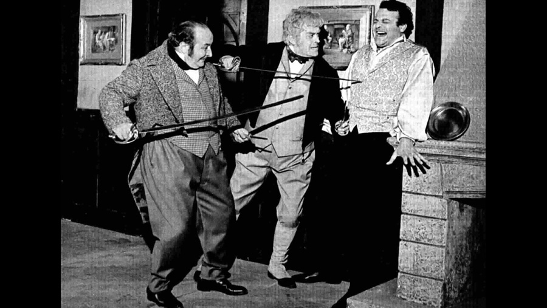

1968

CAST
Samuel Pickwick
-
Mario Pisu
Nathaniel Winkle
-
Gigi Ballista
Jingle
-
Gigi Proietti
La poetessa Hunter (Mrs. Leo Hunter)
-
Vanda Osiris
Signora Bardell
-
Clelia Matania
Tommasino Bardell
-
Loris Loddi
Sergeant Buzfuz
-
Gianni Santuccio
Sam Weller
-
Enzo Cerusico
Rachel Wardle
-
Maria Monti
Tracy Tupman
-
Guido Alberti
Augustus Snodgrass
-
Leopoldo Trieste
Emily Wardle
-
Piera Degli Esposti
Isabella Wardle
-
Maria Teresa Bax
Signorina Witherfield
-
Gianna Pederzini
Job Trotter
-
Ernesto Colli
Tony Weller
-
Folco Lulli
Joe, the Fat Boy
-
Ciccio Canzio
Wardle
-
Antonio Meschini
Signora Wardle
-
Zoe Incrocci
Dodson
-
Enrico Simonetti
Avv. Perker
-
Vincenzo De Toma
Roker
-
Alessandro Cutolo
Dr. Slammer
-
Gustavo D'Arpe
Fogg
-
Dino Curcio
Il sindaco Nupkins
-
Tino Buazzelli
La moglie del sindaco
-
Viviana Polic
La figlia del sindaco
-
Giuliana Calandra
Arabella Allen
-
Daniela Calvino
Jackson
-
Marco Tulli
Mary
-
Brunella Bovo
Lieutenant Tappleton
-
Cesare Gelli
Phunky
-
Fabrizio Jovine
Trundle
-
Adolfo Fenoglio
Benjamin Allen
-
Vittorio Stagni
Signora Cluppins
-
Lia Thomas
Peter Magnus
-
Umberto D'Orsi
Dr. Payne
-
Franco Odoardi
Il prigioniero dell'altra corte
-
Tino Scotti
La cuoca del Westgate College
-
Anna Lina Alberti
Jinks
-
Mario Righetti
Grummer
-
Memmo Carotenuto
Captain Boldwig
-
Marco Ferreri
Smangle
-
Franco Parenti
Hunt
-
Pasquale De Filippo
Dowler
-
Quinto Parmeggiani
Signora Dowler
-
Esmeralda Ruspoli
Coachman
-
Pietro Tordi
Milord (The Hon. Samuel Slumkey)
-
John Francis Lane
Onorevole (Gentleman)
-
Eugene Walter
Mr. Leo Hunter
-
Vincenzo Talarico
Signora Sanders
-
Mirella Gregori
La direttrice del Westgate College
-
Eleonora Morana
La matrigna di Sam (Sam's stepmother)
-
Ermelinda De Felice
Stiggins
-
Franco Valobra
Vice sceriffo Namby (Vice Sherriff)
-
Max Turilli
Skimping
-
Gianfranco Varetto
Il presidente del tribunale
-
Luigi Bonos
Martin
-
Corrado Olmi
Il farmacista
-
Salvatore Santillo
Wilkins
-
Edoardo Florio
Un ufficiale
-
Neal Stenton
Un impiegato (Employee)
-
Enrico Lazzareschi
Un altro impiegato
-
Tullio Valli
Jago
-
Dante Maggio
Desdemona
-
Gianni Magni
Emilia
-
Erminio Spalla
Un capostazione (Stationmaster)
-
Nico Da Zara
Un altro capostazione
-
Néstor Garay
Zia Sarah (Aunt Sarah)
-
Tina Lattanzi
Bantham
-
Cesarini da Senigallia
Un contadino (Farmer)
-
Toni Maestri
Smauker
-
Enrico Ribulsi
Tuckle
-
Alfredo Bianchini
Harris
-
Alfredo Senarica
Wiffers
-
Luigi Leoni
Il fattorino (Bellboy)
-
Cesare Dominici
Bob
-
Pier Luigi Zollo
Lo studioso (Scholar)
-
Giustino Durano
Humm
-
Mirco Valentinzing
Pruffle
-
Bruno Smith
Un poliziotto (Policeman)
-
Valentino Macchi
CREATIVE TEAM
Director
-
Ugo Gregoretti